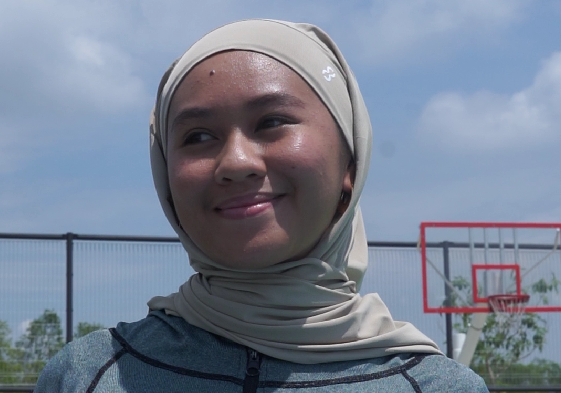

This Tudung Sukan (Sports Hijab) Has Completely Changed My Workout Routine, Because I Never Feel Hot and Stuffy Wearing It!
Hi, I’m Salma. A 42-year-old mom and full-time office worker. While taking care of my family the best I can, I’m also trying to stay in shape by hitting the gym after work, or forcing myself to go on short hikes with my family during the weekends.
After giving birth to my second child, my body changed… I became overweight, sluggish, and lost muscle. It’s not easy to just jump into working out again, especially when you have a family to care for. After a whole day of running after kids, tidying the house, and cooking, all I wanted to do was sit down and do nothing.
I was once a sporty woman, and I missed the feeling of being active. After years of not working out, I decided to start picking up simple exercises again. I went to check my old sports outfits, but none of them fit anymore. Clearly, I had gained weight, and it showed. The only thing that kinda still fit was my old tudung sukan — a slip-on tudung sarung hijab. No style, just plain. I remember hating it because it made my face look rounder than it actually was!
I put on the old tudung and looked at myself in the mirror. Oh my god! My face looked so round, my cheeks were “overflowing,” and I definitely didn’t want to look at them. I kept adjusting, but really, there was nothing to adjust. It was just a piece of cloth. I didn’t like how I looked in it. Nevertheless, I tried doing some simple stretching moves at home while watching TV with my sons. Very quickly, I started to sweat…

I touched my head with my hand… the tudung was soaking wet with sweat. I felt hot, sweaty, and suffocated. The heat was trapped inside my old tudung, radiating from my scalp. Like most families in Malaysia, we have AC, so I turned it on to see if that would help. It was worse. The moisture trapped on my head, combined with the AC blowing directly onto me, felt like having smelly ice water trapped inside my slip-on tudung!
I started to feel dizzy. I eventually stopped the workout and didn’t even complete two sets.
That night, I was desperately searching for a tudung specifically made for workouts. Honestly, when I browsed Google, Instagram, or TikTok, I mostly saw similar styles. None of them convinced me they were truly designed for sports. In every sports brand, you see endless choices for non-Muslims, but almost nothing focused on Muslim women’s needs in activewear. Just as I was getting frustrated by this unfairness, I stumbled upon a video discussing the exact problems with normal sports hijabs.
The video was from BodyStory, a Malaysian-owned company that focuses on Muslim women’s needs in activewear. They launched a sports hijab that tackles problems nearly every Muslim woman faces:
- Fabric – Most sports hijabs on the market aren’t made of proper sports fabric.
- Weight – Quality sportswear always feels light and comfortable because experts know that lightweight fabric (spandex, polyester, or better, a blend) is essential.
- Style – Nobody wants to look like an egg when putting on a tudung! Style matters because looking good motivates women to stay active. Every woman deserves to feel confident and pretty, even while working out.
But of all these points, one feature caught my attention:
BodyStory TieFit Tudung is like your second skin. It works as a climate-control layer that regulates your body temperature during workouts.
Finally, I had found a hijab designed for movement, comfort, and Malaysia’s hot climate — one that puts science first. Let me explain why this made me so excited.

Your head and neck are the main areas that regulate body temperature during exercise. They act as the “commander” of your body because they’re packed with blood vessels close to the skin. When your head and neck overheat, your brain tells you to slow down, even if your muscles still have energy. That’s why you sometimes feel “done” after just 15 minutes of exercise. You’re not actually out of energy, you’re just overheated.
The tudung covers these “radiators” of your body: your head and neck. They control balance, coordination, oxygen flow, and even how your brain decides when you’re “too tired” to continue. BodyStory TieFit Sports Tudung solves exactly this issue. It’s designed to protect Islamic values while supporting performance. No compromise, no limits — just confidence and performance for Muslim women who want to be active.
TieFit Sports Tudung is now my must-have for every workout: it’s versatile, comfortable, and functional
With TieFit, my workouts are completely different. I can exercise longer without overheating, and I don’t feel too hot or too cold. It really works as a “climate-control layer” for my body.
I wasn’t the only one impressed. After buying TieFit, I gave one to my friend Amira, my workout buddy. We run, do yoga, and hike together. Here’s what she said:
“Isn’t it hotter than usual today? But I didn’t feel too bad running… Look, we’ve just broken our running record, and I didn’t feel dizzy. What you said about this tudung is true — it stays dry and fresh.”
Of course, she went on to buy two for herself… one in Black and one in Beach color.
I rarely sit down to write such a detailed review, but TieFit Sports Tudung really helped me get back into a consistent workout routine. It’s the little things that gave me new motivation, new energy, and made my days easier.
BodyStory is offering a discount for readers of this article. If you need a little motivation to reward yourself and commit to an active lifestyle, TieFit Sports Tudung might be exactly what you need.